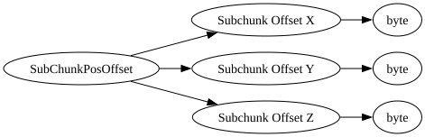

| Field Name | Field Type | Field Constraints | Field Notes |
|---|---|---|---|
| Subchunk Offset X | byte | <div style="padding-left: 0px;">Minimum = -128<br>Maximum = 127</div> | |
| Subchunk Offset Y | byte | <div style="padding-left: 0px;">Minimum = -128<br>Maximum = 127</div> | |
| Subchunk Offset Z | byte | <div style="padding-left: 0px;">Minimum = -128<br>Maximum = 127</div> |